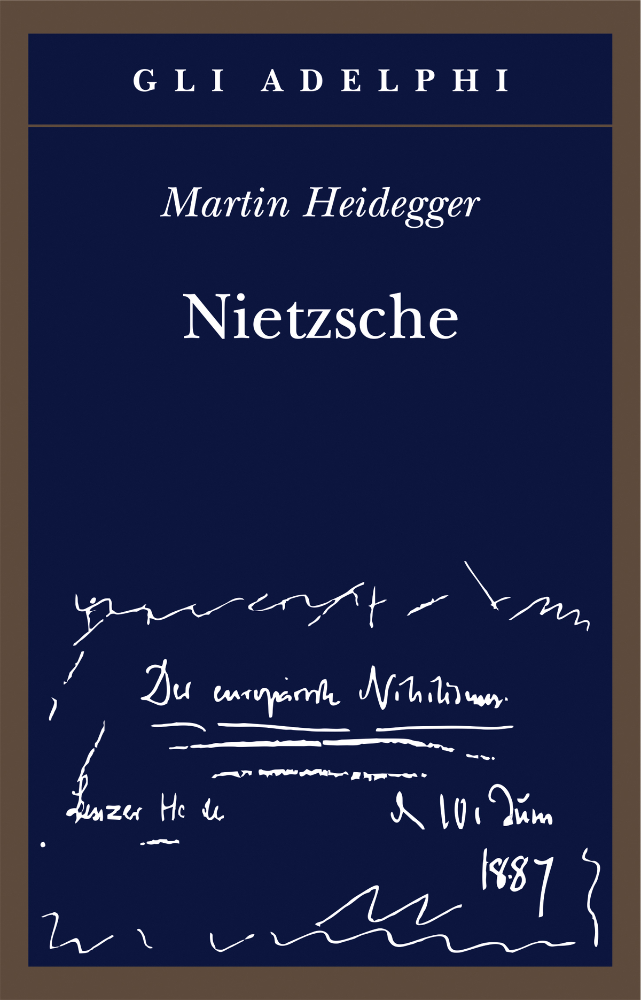
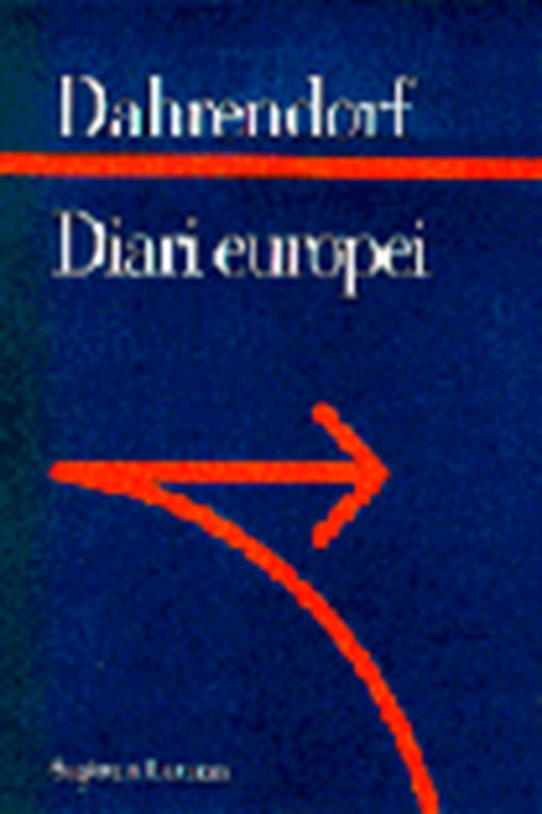
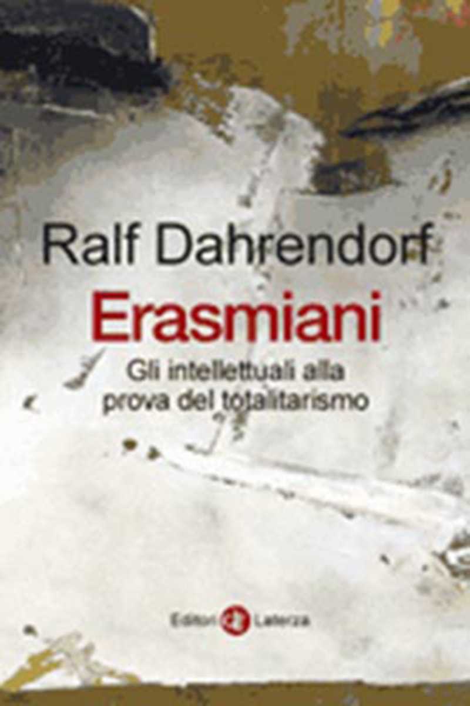
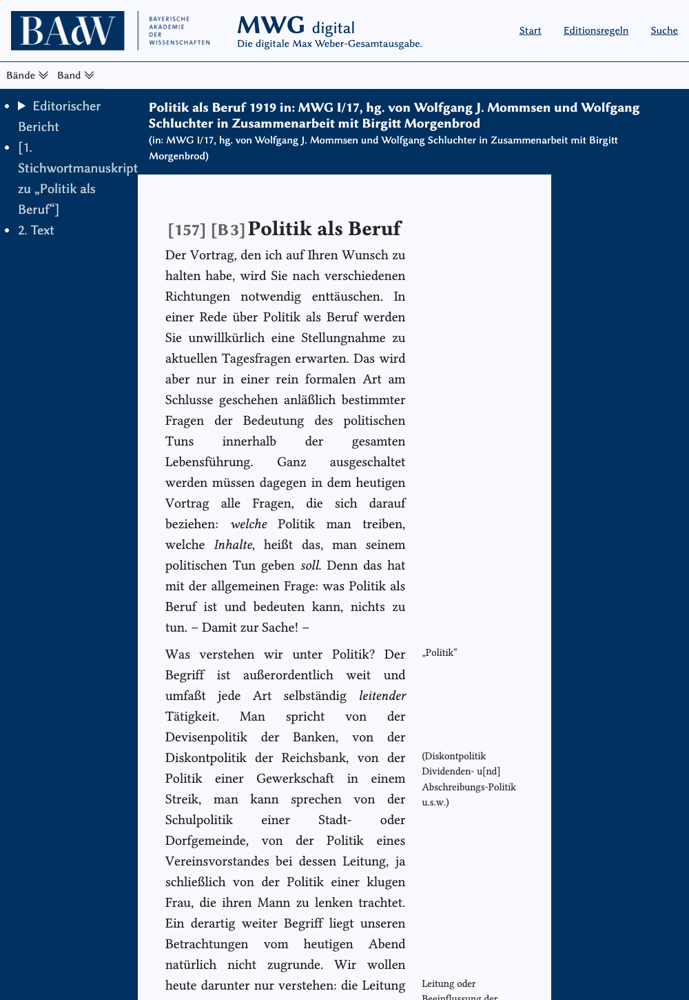

1:05:56 · 15 OPERE
Ralph Dahrendorf l'anti-Dutschke.
Il filo del discorso
La figura di Ralf Dahrendorf serve a Dr Divago per interrogare la distanza fra prestigio istituzionale e indipendenza del pensiero. Prima di affrontarne i Diari europei, il relatore sviluppa una lunga premessa sull’industria culturale: prodotti di consumo, schermi e formule semplificate tenderebbero, nella sua lettura, a sostituire il confronto con il reale. La difesa della lettura e del dissenso passa attraverso Platone, Freud, Frost e Meerloo.
Leggi la sintesi completaRiduci la sintesi
Le valutazioni sull’identità di genere, sull’abbigliamento e sulla salute mentale rimangono esplicitamente sue opinioni; il loro carattere polemico non le rende descrizioni cliniche delle persone evocate. La parte centrale segue la biografia di Dahrendorf e alcune pagine del volume Laterza 1996. Dr Divago interpreta incontri, incarichi e ambienti universitari come segnali di un’intellettualità integrata nel potere. Il suo bersaglio non è soltanto il privilegio sociale: è un modo di ragionare che, a suo giudizio, descrive cambiamenti e compromessi senza indagarne le cause. L’esame dei riscontri impone però distinzioni. La successione ad Adorno nella presidenza della Società tedesca di sociologia è un dato formale reale, diverso dalla successione filosofica. Titoli nobiliari e incarichi non costituiscono invece prove di una regia clandestina. La lettura del diario apre il problema dell’etica della convinzione e dell’etica della responsabilità. Il giudizio di Dahrendorf su Havel viene contestato come riduzione della ricerca della verità a ingenuità politica. Da qui prende forma il contrasto con Rudi Dutschke: il relatore vede nel dirigente studentesco la coerenza di chi mette in gioco la propria vita, mentre attribuisce a Dahrendorf la duttilità di chi rimane dentro le istituzioni. Il confronto pubblico di Friburgo e l’attentato del 1968 appartengono a questa costruzione interpretativa; non dimostrano da soli le accuse o le ipotesi di complotto proposte nel discorso. Nell’ultima parte la discussione tocca i Pentagon Papers, le politiche pandemiche, la propaganda e il trasformismo dei partiti. Le note separano il periodo documentato dal rapporto americano dalle amministrazioni successive e precisano i limiti delle analogie su filtri e vaccini. Il ritorno ai libri passa per Pascal, un probabile richiamo a Goodbye Kant! di Ferraris e gli Eloi della Macchina del tempo. Il finale, dedicato al libraio Johann Philipp Palm, concentra l’idea etica che attraversa il video: il valore del pensiero si misura nella capacità di sostenere un giudizio anche quando costa, senza che questa tesi autorizzi a scambiare l’accusa per la prova.
I libri nel discorso

Dialettica dell’illuminismo
Identificazione probabile
Note sul riferimento
Copertina: Einaudi, Piccola Biblioteca Einaudi, 2010
Edizione illustrativa dell'opera, con traduzione di Renato Solmi e introduzione di Carlo Galli; non identificata nel video.
Richiamo esplicito ad Adorno/Horkheimer e al concetto caratteristico di industria culturale, identificato probabilmente con il capitolo della Dialettica dell’illuminismo; titolo del volume non pronunciato.

La Repubblica
Identificazione probabile
Note sul riferimento
Copertina: Laterza · La Repubblica · edizione con testo a fronte di riferimento
Immagine associata all’ISBN di riferimento e controllata visivamente; edizione e traduzione non identificate come quelle citate o lette nel video.
La caverna platonica è usata come analogia dello smartphone: allusione univoca all’allegoria del libro VII della Repubblica, titolo non pronunciato.

La femminilità (Die Weiblichkeit), lezioneXXXIII della Nuova serie di lezioni di introduzione alla psicoanalisi
Identificazione probabile
Note sul riferimento
Pagina iniziale della lezione XXXIII, facsimile 1933: Internationaler Psychoanalytischer Verlag · 1933 · facsimile IPU · inizio lezione XXXIII
Pagina iniziale autentica della lezione nel volume 1933, dichiarata pagina di apertura e non copertina del volume o libro separato. Il titolo italiano è traduzione descrittiva; nessuna specifica edizione italiana è attribuita al video.
La frase di Freud sulla prima distinzione incontrando un essere umano è riscontrata nella lezione XXXIII Die Weiblichkeit. Titolo non pronunciato, conservata identificazione probabile.
The Road Not Taken
Identificazione probabile
Note sul riferimento
Copertina della raccolta: Poesia del 1915, raccolta in Mountain Interval nel 1916. Copertina della raccolta Dover The Road Not Taken and Other Poems, 1993, 64 pagine.
Copertina autentica della raccolta Dover, non fascicolo autonomo della singola poesia o edizione vista nel video.
Il relatore attribuisce a Robert Frost i versi finali sulle due strade e sulla differenza prodotta dalla scelta: corrispondenza testuale con The Road Not Taken.

The Rape of the Mind
Note sul riferimento
Copertina: World Publishing Company · 1956 · testo inglese
Fotografia della copertina dell’edizione originale del 1956, fornita dal catalogo OpenLibrary. I segni d’usura appartengono all’esemplare fotografato. Edizione del video non accertata.
Viene nominato The Rape of the Mind di Meerloo come lettura sulle tecniche di condizionamento.

Nietzsche
Note sul riferimento
Copertina: Adelphi, 2018 · edizione di riferimento
È nominato esplicitamente il Nietzsche di Heidegger, usato come esempio della critica all’interpretazione e alla selezione di passi.

Diari europei
Note sul riferimento
Copertina: Laterza · Sagittari98 · 1996 · ISBN 9788842048879
Copertina originale dell’editore per l’edizione italiana 1996. Il video identifica titolo, editore e anno; manca comunque una revisione umana dell’esemplare audiovisivo.
Il relatore presenta Diari europei, Laterza 1996, poi ne legge più passi e indica pagina19 nel finale. Testo identificato dal titolo effettivo e catalogo editore/Braidense.

Erasmiani. Gli intellettuali alla prova del totalitarismo (Versuchungen der Unfreiheit)
Identificazione probabile
Note sul riferimento
Copertina della traduzione italiana Erasmiani: Laterza · i Robinson/Letture · 2007 · ISBN 9788842081746
Copertina autentica della traduzione italiana, esplicitamente distinta dal volume tedesco menzionato. L’edizione consultata nel filmato non è verificata; originale e traduzione sono una sol’opera.
È menzionato un altro libro di Dahrendorf con titolo tedesco reso liberamente e sottotitolo sugli intellettuali nei tempi della prova. Riscontro con Versuchungen der Unfreiheit, tradotto Erasmiani; tedesco nella trascrizione automatica e resa libera richiedono identificazione probabile.

Pentagon Papers (Report of the Office of the Secretary of Defense Vietnam Task Force)
Note sul riferimento
Prima pagina del fascicolo introduttivo e indice: Rapporto finale del 1969 · fascicolo introduttivo e indice · scansione NARA declassificata nel 2011
Prima pagina del fascicolo introduttivo e indice conservato dai National Archives; non è la copertina di un libro e non riproduce l’intero rapporto. La voce riguarda il corpus documentario.
Pentagon Papers esplicitamente nominati discutendo la guerra in Vietnam. Il riferimento è al rapporto documentario.

La società aperta e i suoi nemici
Identificazione probabile
Note sul riferimento
Copertina: Armando Editore · Classici · 2018 · volume unico
Copertina autentica di riferimento, controllata visivamente. L’edizione non è identificata come quella usata nel video.
Richiamo alla società aperta e a Popper nel discorso sul rapporto con Dahrendorf: probabile allusione al libro. Titolo completo non pronunciato e nessuna deduzione che Popper abbia approvato politiche pandemiche successive.

La politica come professione (Politik als Beruf)
Identificazione probabile
Note sul riferimento
Inizio del testo Politik als Beruf, MWG digital: Testo 1919 · edizione critica MWG I/17 · Accademia bavarese
Schermata autentica del titolo e dell’inizio del testo primario nell’edizione critica digitale. Non è la copertina Duncker & Humblot, non è un frontespizio cartaceo e non è una schermata di un semplice indice bibliografico.
La lettura di Dahrendorf introduce la distinzione specifica weberiana fra etica della convinzione e responsabilità, ripresa poi a3131s. Il testo originale di riferimento è probabilmente Politik als Beruf; titolo non pronunciato.

Pensieri
Identificazione probabile
Note sul riferimento
Copertina: UTET · a cura di Bruno Nacci · 2021
Copertina autentica dell’edizione di riferimento, non attribuita all’esemplare del video.
L’essere umano come canna fragile ma pensante identifica la metafora di Pascal nei Pensieri. La distinta espressione latina Frangar non flectar non è attribuita a Pascal.
Goodbye Kant! Che cosa resta oggi della Critica della ragion pura
Identificazione probabile
Note sul riferimento
Copertina: Bompiani · Tascabili/Saggistica · 2018 · ISBN 9788845297571
Copertina originale della ristampa 2018; non prova che sia l’edizione citata. La polemica del relatore sul libro non costituisce una valutazione editoriale condivisa dalla scheda.
Ferraris è collegato a un volume su che cosa resti di Kant, corrispondente probabilmente al sottotitolo di Goodbye Kant!, verificato presso Giunti/Bompiani; non confuso con Imbecillità.

Faust
Note sul riferimento
Copertina: BUR / Rizzoli · 2005
Immagine autentica dell’opera, controllata visivamente; l’edizione di riferimento non è attribuita al filmato.
Faust è nominato espressamente, ma il richiamo immediatamente precedente è degradato nella trascrizione automatica. Personaggi e formulazione di un’eventuale citazione non sono accertati.

La macchina del tempo
Note sul riferimento
Copertina: Feltrinelli · Universale Economica, I classici
Espliciti H.G.Wells, La macchina del tempo, Eloi e Morlock, usati dal relatore come analogia della passività culturale.